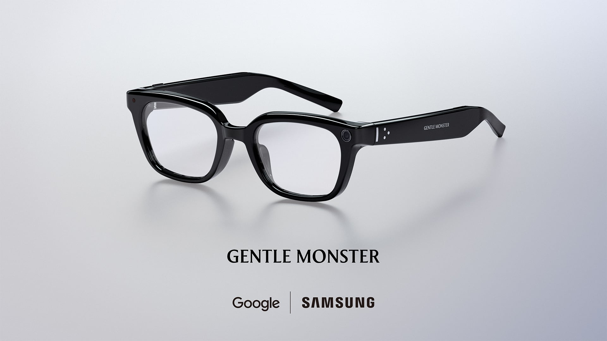
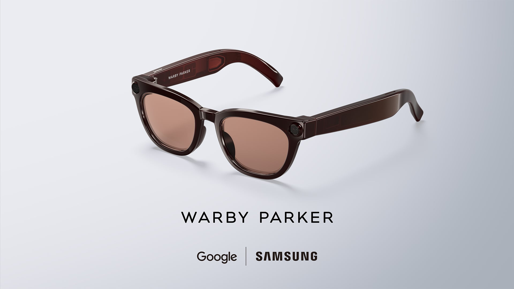

삼성의 스마트 글래스 시장 진출
Samsung이 공식적으로 스마트 글래스 시장에 진출합니다. 런던에서 개최된 Galaxy Unpacked 행사에서 Samsung은 Google의 Android XR 플랫폼과 Gemini AI를 탑재한 새로운 인텔리전트 웨어러블 기기를 공개했습니다. 기존 AR 하드웨어 특유의 투박한 외형을 탈피하기 위해, Samsung은 Gentle Monster 및 Warby Parker와 파트너십을 맺고 일상적인 착용에 적합한 디자인의 프레임을 제작했습니다.
하드웨어 사양 및 배터리 성능
해당 기기는 Qualcomm의 Snapdragon AR1 Gen1 플랫폼을 기반으로 구축되었습니다. Samsung에 따르면 이 글래스는 한 번 충전으로 최대 9시간 동안 사용할 수 있으며, 포함된 충전 케이스를 통해 추가로 7회의 완충이 가능합니다. 내장된 카메라는 온보드 AI에 시각적 맥락을 제공하여 기기가 주변 환경을 인식하고 처리할 수 있도록 돕습니다.
두 가지 스타일의 디자인
Samsung은 두 가지 서로 다른 스타일을 선보입니다. Gentle Monster 에디션은 직선형 상단 테두리가 특징인 슬림한 블랙 프레임이며, Warby Parker 버전은 약간 위로 굽은 눈썹 라인의 브라운 프레임을 채택했습니다. 두 모델 모두 가벼운 착용감을 최우선으로 설계되었으며, Samsung은 파트너 브랜드들과 협력하여 귀와 이마 부분의 밀착감을 세밀하게 조정했습니다.
소프트웨어 및 AI 기능
소프트웨어 측면에서 이 글래스는 Google의 Gemini AI를 활용해 음성, 터치, 제스처 제어를 통해 핸즈프리 작업을 수행합니다. 카메라를 기반으로 한 멀티모달 AI 기능은 다음과 같습니다.
- 화이트보드 스캔 및 텍스트를 Notes로 정리
- 실시간 번역 제공
- 위치 기반 내비게이션 안내
- 영상 통화 중 실시간 시점 공유
- 수신 메시지 요약 및 음성 읽어주기
시장 경쟁력 및 출시 정보
이 제품의 핵심 개념은 명확합니다. 사용자가 스마트폰을 계속 꺼내지 않아도 시야 내에서 AI의 도움을 받을 수 있게 함으로써 Meta의 스마트 글래스와 직접 경쟁하는 것입니다. 다만, Samsung은 현재 구체적인 가격이나 공식 출시 날짜 등 최종 출시 세부 사항을 공개하지 않았습니다.
총평
Samsung은 Google과의 협력 및 유명 안경 브랜드와의 파트너십을 통해 기술과 스타일을 모두 잡은 스마트 글래스로 Meta의 대항마를 준비하고 있습니다. 강력한 Gemini AI와 실용적인 디자인을 결합하여 일상 속에서 편리하게 활용할 수 있는 차세대 웨어러블 경험을 제공할 것으로 기대됩니다.
Samsung 进入智能眼镜市场
Samsung 正式进入智能眼镜市场。在伦敦举行的 Galaxy Unpacked 活动中，Samsung 展示了搭载 Google Android XR 平台和 Gemini AI 的新型智能可穿戴设备。为了摆脱传统 AR 硬件笨重的外观，Samsung 与 Gentle Monster 及 Warby Parker 建立合作伙伴关系，打造出适合日常佩戴的时尚框架。
硬件规格与电池性能
该设备基于 Qualcomm 的 Snapdragon AR1 Gen1 平台构建。据 Samsung 称，这款眼镜单次充电可使用长达 9 小时，并通过随附的充电盒可提供额外 7 次满电续航。内置摄像头为车载 AI 提供视觉上下文，帮助设备识别并处理周围环境。
两种风格的设计
Samsung 推出了两种不同风格的设计。Gentle Monster 版本是具有直线型上边缘特征的纤细黑色框架；Warby Parker 版本则采用了略微向上弯曲的眉毛线条棕色框架。两个型号都优先考虑轻便的佩戴感，Samsung 与合作伙伴品牌合作，对耳部和前额部分的贴合度进行了精细调整。
软件与 AI 功能
在软件方面，该眼镜利用 Google 的 Gemini AI，通过语音、触摸和手势控制实现免提操作。基于摄像头的多模态 AI 功能包括：
- 扫描白板并将文本整理到 Notes 中
- 提供实时翻译
- 基于位置的导航引导
- 视频通话中的实时视角共享
- 接收消息摘要并朗读
市场竞争力与发布信息
该产品的核心概念非常明确：让用户无需频繁拿出智能手机，即可在视野中获得 AI 的帮助，从而直接竞争 Meta 的智能眼镜。不过，Samsung 目前尚未公布具体价格或官方发布日期等最终上市细节。
总结
Samsung 通过与 Google 及知名眼镜品牌的合作，旨在打造兼具技术与时尚的智能眼镜，作为 Meta 的强力竞争对手。该产品结合了强大的 Gemini AI 与实用设计，有望提供便捷且具有前瞻性的日常可穿戴体验。
Samsungのスマートグラス市場参入
Samsungが公式にスマートグラス市場へ参入します。ロンドンで開催されたGalaxy Unpackedにて、SamsungはGoogleのAndroid XRプラットフォームとGemini AIを搭載した新しいインテリジェントウェアラブルデバイスを発表しました。従来のARハードウェア特有の無骨な外観を脱却するため、SamsungはGentle MonsterおよびWarby Parkerとパートナーシップを組み、日常的な装着に適したデザインのフレームを製作しました。
ハードウェア仕様およびバッテリー性能
このデバイスはQualcommのSnapdragon AR1 Gen1プラットフォームをベースに構築されています。Samsungによると、このグラスは一度の充電で最大9時間使用可能で、同梱の充電ケースによりさらに7回のフル充電が可能です。内蔵されたカメラはオンボードAIに視覚的なコンテキストを提供し、デバイスが周囲の環境を認識して処理するのを支援します。
2つのスタイルのデザイン
Samsungは2種類の異なるスタイルを提示します。Gentle Monsterエディションは、直線的な上部エッジを特徴とするスリムなブラックフレームであり、Warby Parkerバージョンは、わずかに上向きにカーブしたアイラインのブラウンフレームを採用しています。両モデルとも軽量な装着感を最優先に設計されており、Samsungはパートナーブランドと協力して耳や額へのフィット感を細かく調整しました。
ソフトウェアおよびAI機能
ソフトウェア面において、このグラスはGoogleのGemini AIを活用し、音声、タッチ、ジェスチャーによる操作を通じてハンズフリーでの作業を実行します。カメラをベースとしたマルチモーダルAI機能は以下の通りです。
- ホワイトボードのスキャンおよびテキストのNotesへの整理
- リアルタイム翻訳の提供
- 位置情報に基づいたナビゲーション案内
- ビデオ通話中のリアルタイム視点共有
- 受信メッセージの要約および読み上げ
市場競争力および発売情報
この製品の核心的なコンセプトは明確です。ユーザーがスマートフォンを頻繁に取り出すことなく、視界の中でAIの支援を受けられるようにすることで、Metaのスマートグラスと直接競合することを目指しています。ただし、Samsungは現時点で具体的な価格や公式の発売日など、最終的なリリース詳細は公開していません。
まとめ
SamsungはGoogleのGemini AIと提携し、有名ブランドとのコラボによるスタイリッシュなデザインを融合させたスマートグラスを発表しました。高度なマルチモーダルAI機能を備えつつ、日常での使いやすさを追求することでMetaの製品に対抗する構えです。具体的な発売時期や価格は未定ですが、技術とファッションを両立した次世代のウェアラブル体験を提供することが期待されています。
Samsung Enters the Smart Glasses Market
Samsung is officially entering the smart glasses market. At the Galaxy Unpacked event held in London, Samsung unveiled a new intelligent wearable equipped with Google's Android XR platform and Gemini AI. To move away from the bulky appearance typical of traditional AR hardware, Samsung partnered with Gentle Monster and Warby Parker to produce frames designed for comfortable everyday wear.
Hardware Specifications and Battery Performance
The device is built on Qualcomm's Snapdragon AR1 Gen1 platform. According to Samsung, these glasses can last up to 9 hours on a single charge, with the included charging case providing an additional 7 full charges. The integrated camera provides visual context to the onboard AI, enabling the device to recognize and process its surroundings.
Two Distinct Design Styles
Samsung introduced two different styles for the product. The Gentle Monster edition features a slim black frame with a straight top edge, while the Warby Parker version adopts a brown frame with a slightly curved eyebrow line. Both models were designed with a lightweight feel as a priority, and Samsung collaborated with its partner brands to fine-tune the fit around the ears and forehead.
Software and AI Features
On the software side, the glasses utilize Google's Gemini AI to perform hands-free tasks through voice, touch, and gesture controls. The camera-based multimodal AI features include:
- Scanning whiteboards and organizing text into Notes
- Providing real-time translation
- Location-based navigation guidance
- Real-time point-of-view (POV) sharing during video calls
- Summarizing received messages and reading them aloud
Market Competitiveness and Release Information
The core concept of this product is clear: it aims to compete directly with Meta's smart glasses by allowing users to receive AI assistance within their field of vision without having to constantly take out their smartphones. However, Samsung has not yet revealed final release details, such as specific pricing or an official launch date.
Overall Review
Through collaboration with Google and renowned eyewear brands, Samsung is preparing a competitor to Meta's smart glasses that balances both technology and style. By combining powerful Gemini AI with practical design, the device is expected to provide a next-generation wearable experience that can be conveniently used in daily life.
Summary
Samsung is entering the smart glasses market with a new wearable powered by Snapdragon AR1 Gen1 and Google's Gemini AI. The device features stylish designs from Gentle Monster and Warby Parker, aiming to compete with Meta by offering hands-free, multimodal AI features in a practical form factor.

